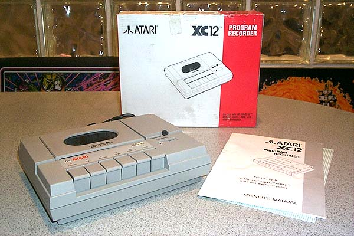

Atari, in Europe sold a great number of these Datarecorders. A replacement for the original Atari 410 and the later released Atari 1010 datarecorders. The XC12 matched the styling of the Atari XE series of computers released in 1985-1987. The European computer market consumer did not have the spending dollars of their US counterparts, so the disk drives were outside the budget of many eager Atari computer enthusiasts, so an economical alternative was the datarecorder.
Due to such heavy use
of this peripherals, many hardware hackers modified the units to increase
their transfer speed from 2k up to 9.6k to give data saves and loads a
boost in speed.